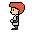
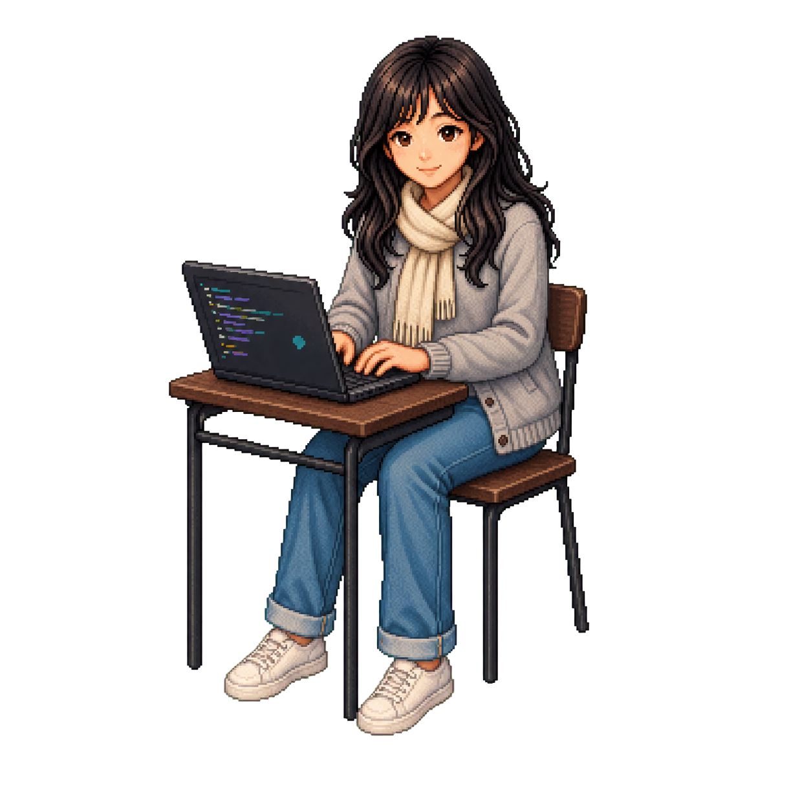

PROJECT 01
MyFiles Search
갤럭시 My Files의 검색 경험을 고도화하는 프로젝트입니다. 키워드 기반 검색과 의미 기반 검색을 결합한 하이브리드 검색에 rerank 단계를 더하고, Lucene을 활용해 더 정확하고 빠르게 원하는 파일을 찾도록 설계했습니다.
★ PLAYER 01 / ANDROID DEVELOPER
삼성전자 MX 사업부에서 애플리케이션 개발을 시작한 안드로이드 개발자입니다.
START GAME
01 / ABOUT
모바일 제품의 흐름을 이해하고, 사용자가 직접 만지는 순간까지 고민합니다.

BUILD MODE
아이디어를 코드로 옮기고, 작은 디테일까지 다듬습니다.
02 / EXPERIENCE
2024년 7월, 삼성전자 MX 사업부 애플리케이션 개발자로 커리어를 시작했습니다.
03 / PROJECTS
PROJECT 01
갤럭시 My Files의 검색 경험을 고도화하는 프로젝트입니다. 키워드 기반 검색과 의미 기반 검색을 결합한 하이브리드 검색에 rerank 단계를 더하고, Lucene을 활용해 더 정확하고 빠르게 원하는 파일을 찾도록 설계했습니다.
PROJECT 02
사용자가 생전에 미리 지정한 노트·연락처·메시지 등의 데이터를, 사후에 지정한 사람들에게 전달할 수 있도록 돕는 서비스입니다. 소중한 기록과 마음이 필요한 사람에게 닿는 흐름을 설계합니다.
04 / SKILLS
Android 애플리케이션 개발을 바탕으로 검색 품질과 개인 데이터 경험을 고민합니다.
05 / CONTACT
개발과 프로젝트 이야기는 GitHub에서 이어갑니다.
GITHUB @GOGOCONI06 / GAMES
ARROW / WASD 이동 · P 일시정지